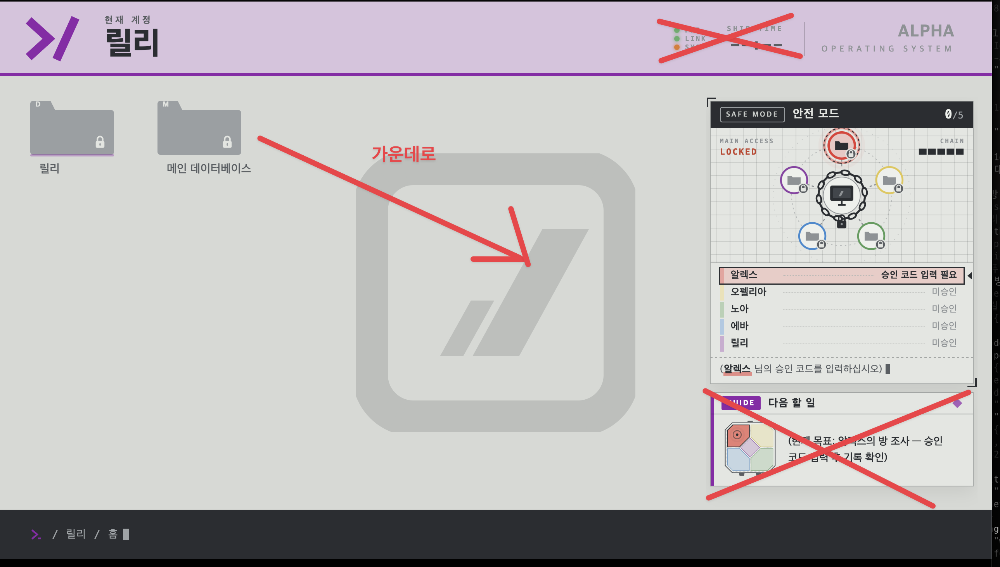

단말기 UI
| 이효주 | |
| 시작 전 | |
| 3 |
총괄) 이걸 한 사람한테 짬을 때렸다고?? 하다가 애매한거 있으면 연락해주세요
단말기=컴퓨터, 태블릿을 칭함.
릴리는 데스크탑, 나머지 방엔 태블릿 있을 예정입니다.
ui 디자인
- 전체 디자인
- 글꼴
- 본문
- 시스템/터미널
- 손글씨 (굳이 연출이 필요한 게 아니라면 폰트 사용할것임)
- 48행성일 침입자 글꼴(노아의 글씨체, 노아 폴더 메모와 같게)
- 자막(등장인물별로 다르게?) ⇒ 색만 다르게 하면 됨
- 아이콘
- 잠금
- 해제
- 비공개
- 파일 아이콘 (폴더, txt, 『행성·탈출』 프로젝트 실행 장치, mp3 아이콘 등)
- 문서(로그/일지/메모/이메일)
- 등등…
- 공통 컴포넌트
- 다이얼로그(팝업 화면, 열려 있는 동안 다른 화면과 상호작용 불가)
- 암호 입력
- 계정+안내 문구
- 잠금 해제 애니메이션, 오답 애니메이션 등
- 시스템 메시지(일반/오류)
- 문서 뷰어
- 통신 로그
- 일지형 기록
- 표지
- 양방향 페이지 넘김
- 비공개 구역 잠금 페이지
- 등등…
- 메모/편지
- 이메일

총괄: 전에 내가 디자인했던 거 예시 - 암호 입력
- 폴더/파일 뷰어

(예시) 게임 스타필드의 UI인데 좀 고쳐서 그대로 써도 될듯 합니다 - 총괄 각주: 안됨 매우 단순화된 UI여야 함 바탕화면에 아무것도 없이 배경색만 있고 각 파일 아이콘도 단순하게 있어야 함 

- idle 상태 화면(대기중이지만 완전 검은 화면은 아니도록)
- 음성 재생 상태 비주얼라이제이션
- 다이얼로그(팝업 화면, 열려 있는 동안 다른 화면과 상호작용 불가)
- 릴리(메인 컴퓨터)
- 이름 입력 화면
- 본인 확인 화면
- 본인 확인 실패 → 안전 모드 전환 연출
- 안전 모드 현황판(폴더 5개·사슬로 묶인 메인 컴퓨터 표시)

(박찬혁 제안) 릴리의 컴퓨터(릴리 폴더와 메인 데이터베이스 폴더가 있으며, 안전 모드 잠금 관련 진행도 사항이 띄워져 있음), 나머지 컴퓨터는 각 계정에 해당하는 폴더만 있음(예: 알렉스 컴퓨터에는 알렉스 폴더만 있음)
총괄 각주: 존재해야 하는 디자인 컴포넌트들에는 동의, 메인 데이터베이스 주위에 잠긴 표시가 점대칭적으로 존재하는 게 예쁜 것 같음
(박찬혁 제안2) 메인 데이터베이스 주변에 잠김 표시들이 있으면 폴더로 혼동할 수 있을 것 같아 분리했습니다(ai 딸깍이라 쓸데없는 요소가 많습니다) - 『탈출』 프로젝트 실행자 신원 확인 화면(EVA 재입력, 문제 8)
- 다른 이름 입력 시 연출(ALEX·NOAH: X 자동 입력 / LILY·OPHELIA: 소리·화면이 먹먹해짐)
- ALONE 입력 화면
- 기록 보안 파일 화면(문제 14)
- ‘마지막 기록’ 이름 치환 연출(인물 이름만 ‘에바’로, 글자색 유지)
- LOVE 입력 화면
- 레버 안내
- 선택 대기 연출(지직거림, 2단계 에바 메모·5단계 링이 끼워진 레버 이미지)
- 탈출 엔딩 연출(셧다운 안내, 암전 뒤에도 화면은 켜 두고 자막 표시)
- 행성 엔딩 연출(에바의 메모 → 구조 신호 송출)

- 알렉스
- 항법/통신 콘솔 느낌의 ui
- 로그 말소 표시와 잠금 표시 전환
- 현재 소모량(산소·식량·물마다 사람 아이콘 하나, 설명 문구 없음)
- 오펠리아
- 보고서 (위쪽 문서뷰어 참고). REPORT·끝없는탐구·최적해·HEAL을 모두 같은 암호 입력칸에 넣는다
- 노아
- 승인 코드 입력판(위 여섯 칸·가운뎃점·아래 여섯 칸, 위쪽 화살표·아래쪽 무지개 표시)
- 노아 폴더 메모(초록 글씨, 48행성일과 같은 글씨체, ‘다른 곳’만 노란색·문제 3 하이라이트 글꼴)
- 추가 잠금 화면(오펠리아 보고서와 같은 모양의 입력창, 키를 누르면 ‘여기서는 입력할 수 없습니다.’). 이때 알렉스·에바 단말기에는 ‘노아 님이 추가 잠금을 설정했습니다. 잠금을 해제해 주십시오.’
- 2부 노아 기록 열람 화면(문제 12)
- 에바
- 승인 코드 입력(JOIN)
- 에바 폴더: 탈출 계획 메모, 『탈출』 프로젝트 설계(레버 그림), 에바의 메모 (2)(‘흥미로운’ 아래 다섯 색 밑줄)
- 1부 개인 금고 표시(‘본인 확인이 필요합니다.’)
- 2부 본인 확인 기록 인식 → 비공개 폴더·개인 금고 잠금 해제 문구
- 비공개 폴더(47행성일 메모, 복구 실험 결과)
- ‘뇌파 전송’ 화면(장치 코드 입력 → 버튼 → 파형·진행 막대 연출)